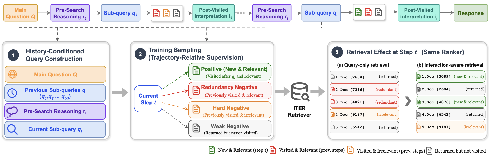

Interaction-aware retrieval for agentic search: a dense retriever trained from the agent's own trajectories. It conditions on what the agent already searched and returns what it hasn't read yet. ITER is one setting of the SkimSearchAgent library.
Questionthe first Prime Minister of a landlocked country, found from a chameleon named after its collector
replays a recorded ITER-0.6B episode on BrowseComp-Plus · teal results are new to the agent, grey ones it has already seen
Across six agent backbones from three model families, ITER-0.6B outperforms LRAT, the existing agent-trajectory-trained retriever, in all twelve backbone and benchmark comparisons.
the dashed line marks LRAT (0.6B)
| retriever | InfoSeek-Eval SR | BrowseComp-Plus SR | search recall | visit recall |
|---|---|---|---|---|
| BM25 | 77.3 | 31.1 | .442 | .248 |
| Base (0.6B) | 58.0 | 32.4 | .479 | .249 |
| LRAT (0.6B) | 72.0 | 43.7 | .596 | .321 |
| ITER (0.6B) | 78.7 | 49.2 | .661 | .350 |
| ITER (4B) | 80.3 | 51.2 | .651 | .370 |
Matched-agent evaluation with Tongyi-DeepResearch-30B-A3B. SR is the task success rate; search and visit recall are the share of BrowseComp-Plus evidence the agent retrieved and opened. At the matched 4B scale, ITER outperforms AgentIR on InfoSeek-Eval for five of six backbones and has a higher visit-to-search recall ratio on BrowseComp-Plus for all six. The full tables and ablations are in the paper.
These are the paper's numbers, in the paper's setting. The library's leaderboard runs the same retrievers in a different fixed setting, so its numbers are not comparable with these.
Retrievers trained from agent trajectories usually learn from the current sub-query and its results alone. ITER also uses what the agent already did in the episode: the searches it tried, the reasoning that led to the next one, and the documents it opened.
A search agent answers questions over a corpus. Every sub-query it issues and every document it opens is recorded.
The query carries the main question, the agent's pre-search reasoning, the current sub-query and the sub-queries already tried, not the text it read.
Positives are documents the agent opened and a verifier confirmed useful. Negatives are split by what the agent already did with them: redundancy, hard and weak.
The training data comes from signals the trajectories already produce. ITER needs neither gold document labels nor oracle reranking.

iter_densededup_denseBoth pair the search with get_document, which
opens one document by id. The BM25 versions are iter_bm25 and dedup_bm25.
Build the dense cache with the checkpoint, serve Tongyi-DeepResearch-30B-A3B on an OpenAI-compatible endpoint, then run the experiment file. It holds every setting of the published cell.
# the ITER cache: documents at 512 tokens, last-token pooling, bfloat16 DENSE_SEQ_LENGTH=512 DENSE_DTYPE=bfloat16 DENSE_POOLING=last_token \ skimsearchagent-build-indexes --dataset browsecomp_plus_structured_full \ --retriever dense --model ielabgroup/ITER-Qwen3-Embedding-0.6B --index-root indexes # the published setting skimsearchagent validate configs/iter/browsecomp_plus_full_iter_iter06b_tongyi.yaml skimsearchagent run configs/iter/browsecomp_plus_full_iter_iter06b_tongyi.yaml \ model.api_base=http://127.0.0.1:8000/v1
Every step, from install to both judges, is in docs/ITER.md.
The smaller released checkpoint. Served with its trained query format, queries at 8,192 tokens and documents at 512.
The larger released checkpoint, same recipe and the same serving settings.
Every run is a trajectory, so it is also training data. Triples come out of any run directory, a dense retriever trains on them, and the checkpoint plugs back in as any strategy's dense model.
# trajectories, triples, a checkpoint, then serve it
skimsearchagent-build-triples --runs runs/mine --dataset hotpotqa_structured \
--out train_data/hotpotqa_i2.jsonl --query-style i2 --labeller oracle
skimsearchagent-train-retriever template > train.yaml
skimsearchagent run configs/sieve/hotpotqa_structured_sieve.yaml \
retrieval.dense_model=models/my-retriever retrieval.dense_query_style=i2
@misc{chen2026iter,
title = {ITER: Interaction-Aware Retrieval for Agentic Search},
author = {Chen, Haodong and Wang, Shuai and Yin, Yu and Zhuang, Shengyao and
Zuccon, Guido and Leelanupab, Teerapong},
year = {2026},
eprint = {2608.27912},
archivePrefix = {arXiv},
primaryClass = {cs.IR},
url = {https://arxiv.org/abs/2608.27912}
}